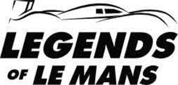

Trade Mark Journal No.2025/030 25 July 2025
UK00004234246 15 July 2025 (6,12,14,25,41)

- Class 6
- Common metals and their alloys ; ores of metal ; enamelled plates; metal hardware ; works of art of common metal ; statues or figurines (statuettes) of common metals ; bronzes [works of art] ; wall art made of common metal.
- Class 12
- Pneumatic tyres ; vehicles ; apparatus for locomotion by land, air or water ; engines for land vehicles ; Suspension shock absorbers for vehicles ; bodies for vehicles ; anti-skid chains ; vehicle chassis ; vehicle bumpers; sun-blinds adapted for automobiles ; safety belts for vehicle seats ; electric vehicles ; caravans ; tractors ; mopeds ; motorcycles ; bicycles ; frames, stands, brakes for vehicles, handlebars, rims , pneumatic tyres and vehicle wheels, pedals, pneumatic wheels or bicycle saddles ; pushchairs ; handling carts ; inner tubes for pneumatic tyres ; tyre mounts ; anti-dazzle devices for vehicles ; anti-theft devices for vehicles ; head-rests for vehicle seats ; automobile hoods ; automobile bodies ; anti-theft alarms for vehicles ; reversing alarms for vehicles ; inner tubes for bicycle tyres ; gear boxes for land vehicles ; caps for vehicle fuel tanks ; hoods [folding roofs] for vehicles ; sleeping berths for vehicles ; signal arms for vehicles ; motors, electric, for land vehicles ; safety seats for children, for vehicles ; hub caps ; windshield wipers ; luggage nets for vehicles ; golf carts ; security harness for vehicle seats ; vehicle covers [shaped] ; seat covers for vehicles ; covers for vehicle steering wheels ; treads for retreading tyres ; air pumps [vehicle accessories] ; trailer hitches for vehicles ; rearview mirrors ; vehicle wheels ; repair outfits for inner tubes ; tyres for vehicle wheels ; remote control vehicles, other than toys ; steering wheels for vehicles, luggage carriers for vehicles, Automobile cigarette lighters; armrests for automobile seats ; protective strips for vehicle bodies.
- Class 14
- Jewellery ; jewellery, precious stones ; chronometric apparatus and instruments ; precious metals and their alloys ; coins ; works of art of precious metal ; jewel cases ; boxes of precious metal ; watch cases, watch straps, watch chains, watch springs or watch glasses ; watches ; key ring ; statues or figurines (statuettes) of precious metal ; cases for clock and watch-making ; medals ; tie pins ; badges of precious metal ; cufflinks ; brooches ; chronometric instruments for sports and sport events ; decorative cuff link covers ; clocks and watches; ornamental sculptures made of precious metal ; trophies made of precious metals.
- Class 25
- Clothing ; shoes ; headgear ; caps being headwear ; shirts ; tee-shirts ; polo shirts ; dresses; down coats; sweaters; clothing of leather or of imitation of leather ; belts [clothing] ; furs [clothing] ; gloves [clothing] ; scarves ; neckties ; hosiery ; slippers ; beach, ski or sport shoes ; underwear ; beach clothes ; sashes for wear ; boots ; money belts ; children’s wear ; cloth bibs ; motorcycle jackets ; weatherproof jackets ; dressing gowns ; sportswear.
- Class 41
- Teaching ; coaching ; entertainment services ; sporting and cultural activities ; arranging and conducting of workshops [training] ; teaching ; entertainment and education information ; leisure services ; publication of books ; lending library services ; video-tape film production ; rental of motion pictures ; rental of sound recordings ; rental of video tape recorders/players or radio and television sets ; rental of show scenery ; organisation of shows ; videotape editing ; photography ; organization of competitions [education or entertainment] ; arranging and conducting of conferences, congresses and symposiums ; arranging of exhibitions for cultural or educational purposes ; news reporters services ; Providing of recreation facilities for events, tournament and sport competition ; arranging of musical events ; booking of seats for shows ; booking of seats for sport events ; movie showing ; game services provided on-line from a computer network ; Gambling services and lottery ; Providing casino facilities (gambling services) ; providing amusement arcade services ; Audio-visual display presentations ; photographic reporting ; production of radio and television programmes ; Providing recreation and entertainment facilities; Providing sport equipment and sport facilities ; Providing sportive information by electronical mean (internet) ; Providing real-time sportive information by using Internet chatroom and informatic online boards; online publication of electronic books and journals ; publication of magazines ; publication of texts, other than publicity texts ; radio and television coverage of sporting events; radio entertainment ; micro-publishing ; ticket agency services [entertainment] ; club services (entertainment or education) ; organization of sports competitions ; organisation of car and motorbike races; Organisation of sport events; providing golf facilities; rental services relating to sport equipment; Rental of driving circuits for training and development of vehicles; rental of sound and image recordings; television entertainment; theme park services; providing of photograph and videos; providing online publications, not downloadable; providing museum facilities; sport camp services; Driver training courses ; driving instruction; videotape production; timing of sports events; Providing of online entertainment, informatic games, sportive information and sport results via downloadable software applications; rental of audio and visual recordings; hosting [organising] awards; sporting and recreational activities; cinematographic adaptation and editing; workshops for cultural purposes; Entertainment in the form of car racing; training for automobile competitions; training of car drivers; management of events for sporting clubs; provision of entertainment information by electronic means; providing sports entertainment via a website.
AUTOMOBILE CLUB DE L'OUEST (A.C.O.)
Representative: ARDAN